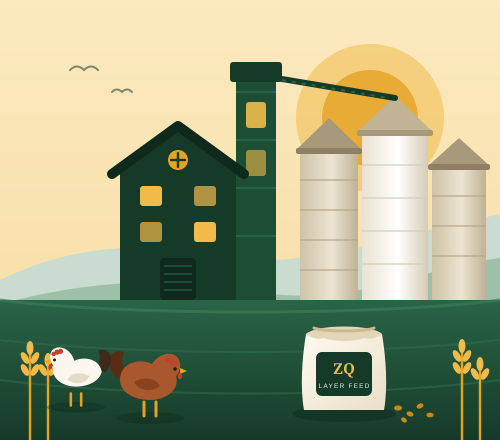

Chick feeds
Fine crumbles and mash that give day-old chicks an even, healthy start.
View chick feedsZumo Quoin Limited mills balanced, consistent feed for every stage of a bird’s life, from day-old chicks to laying hens and market-ready broilers. Better nutrition in, better results out.

Each formula is matched to what a bird needs at that point in its life, so you get healthy growth, strong shells and efficient conversion without paying for nutrients your flock can’t use.
Fine crumbles and mash that give day-old chicks an even, healthy start.
View chick feedsGrower and layer formulas for uniform pullets, steady lay and strong shells.
View layer feedsParent-stock feed and concentrates for farms that mix their own.
View specialty feedsFeed is the biggest cost on a poultry farm. We make sure every bag you buy delivers the same nutrition as the last, so your birds perform and your margins hold.
Rations balanced for protein, energy, amino acids, vitamins and minerals at each life stage.
Raw materials are checked on arrival and finished feed is sampled and batch-coded for traceability.
Well-planned production and stock levels so you are never left waiting for feed.
Practical guidance on feeding programmes, flock health and getting the most from every bag.
A controlled, repeatable process keeps quality the same from one bag to the next.
Maize, soya and other ingredients are bought from trusted suppliers and inspected on arrival.
Samples are checked for moisture, nutrient content and contamination before use.
Ingredients are ground to size and weighed into each batch to the formula.
Feed is conditioned and pressed into pellets or crumbles, then cooled to lock in quality.
Bags are weighed, sealed, batch-coded and stored dry until they reach your farm.
Get a quick estimate for planning, then send it to our team for a tailored quote.
3,450 kg
Indicative only, based on typical industry intake averages. Real intake varies with breed, age, climate and feed form. Our team can give you an exact feeding programme.
Bulk supply on a dependable schedule, with formulas and delivery planned around your production cycle.
The same quality feed in convenient bag sizes, with friendly advice on feeding for better returns.
Stock a trusted feed brand with steady supply, clear labelling and support for your customers.
Become a distributorShort guides on feeding, brooding, egg quality and farm management.
Damp, heat and pests ruin feed fast. Simple storage habits protect your birds and your money.
Warmth, water and feed in the first fourteen days set up the whole life of the flock.
Cracked and thin-shelled eggs cost you money. Here is what hens need to lay strong shells.
Tell us about your flock and we’ll recommend the right feeds, quantities and delivery schedule for your farm.